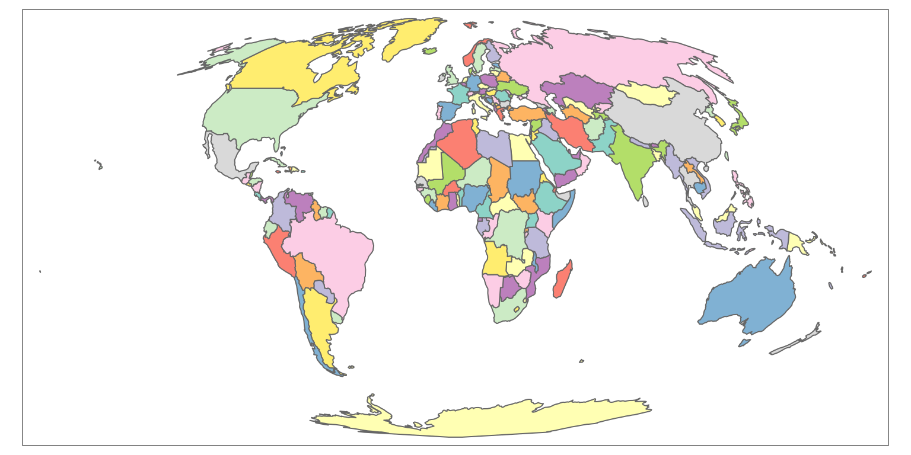
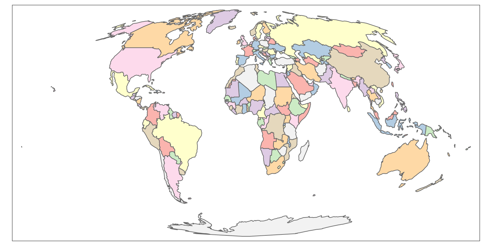
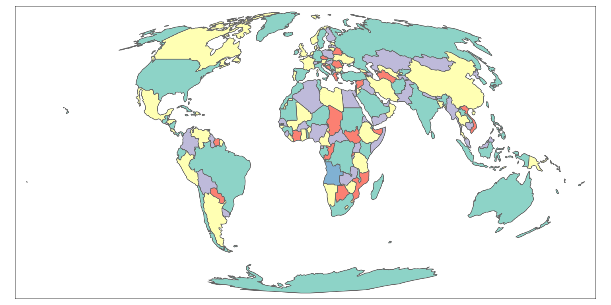
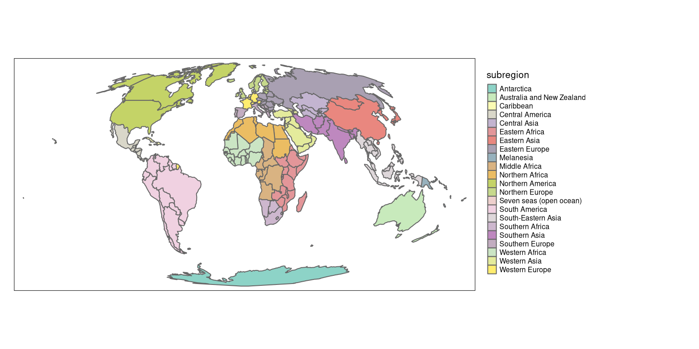
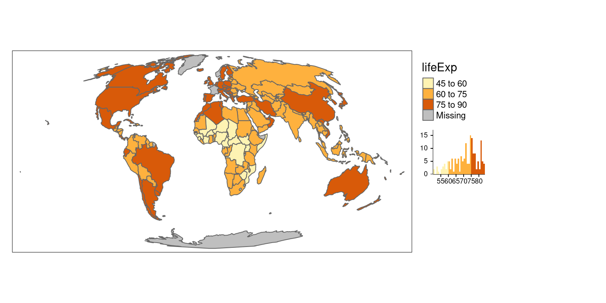
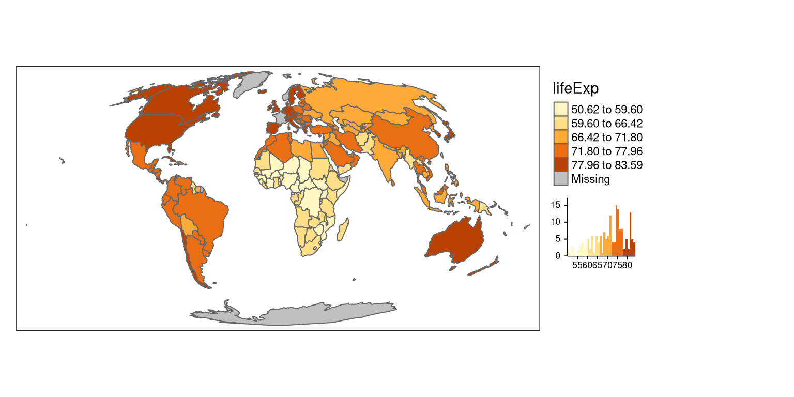
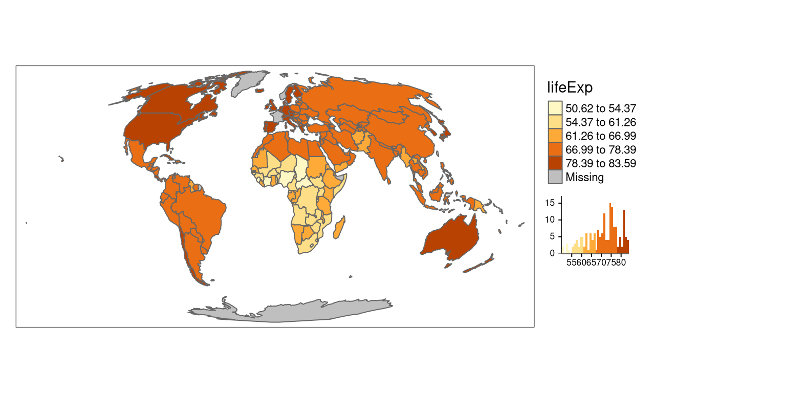
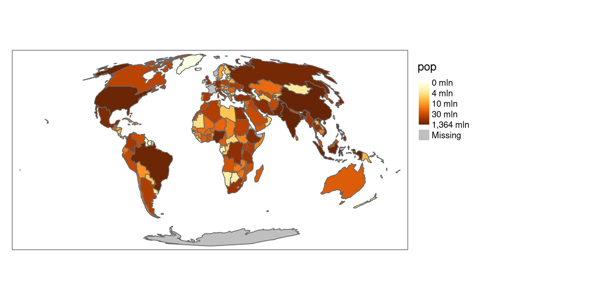
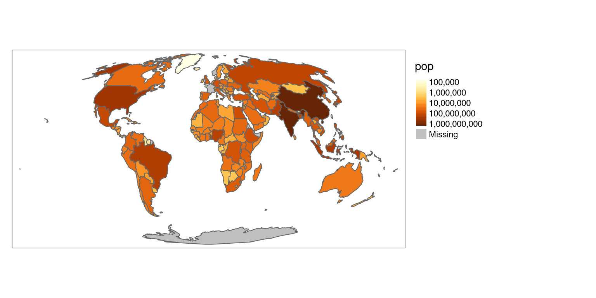

library(spData) # example datasets
library(tmap) # map creation
library(sf) # spatial data reprojectionMap coloring: the color scale styles available in the tmap package
vignette
rstats
This vignette builds on the making maps chapter of the Geocomputation with R book. Its goal is to demonstrate all possible map styles available in the tmap package.
Prerequisites
The examples below assume the following packages are attached:
The world object containing a world map data from Natural Earth and information about countries’ names, regions, and subregions they belong to, areas, life expectancies, and populations. This object is in geographical coordinates using the WGS84 datum, however, for mapping purposes, the Mollweide projection is a better alternative (learn more in the modifying map projections section). The st_tranform function from the sf package allows for quick reprojection to the selected coordinate reference system (e.g., "+proj=moll" represents the Mollweide projection).
world_moll = st_transform(world, crs = "+proj=moll")One color
Let’s start with the basics. To create a simple world map, we need to specify the data object (world_moll) inside the tm_shape() function, and the way we want to visualize it. The tmap package offers several visualisation possibilities for polygons, including tm_borders(), tm_fill(), and tm_polygons(). The last one draws the filled polygons with borders, where the fill color can be specified with the col argument:
tm_shape(world_moll) +
tm_polygons(col = "lightblue")
The output is a map of world countries, where each country is filled with a light blue color.
Coloring of adjacent polygons
The col argument is very flexible, and its action depends on the value provided. In the previous example, we provided a single color value resulting in a map with one color. To create a map, where adjacent polygons do not get the same color, we need to provide a keyword "MAP_COLORS".
tm_shape(world_moll) +
tm_polygons(col = "MAP_COLORS")
The default color can be changed using the palette argument - run the tmaptools::palette_explorer() function to see possible palettes’ names.
tm_shape(world_moll) +
tm_polygons(col = "MAP_COLORS",
palette = "Pastel1")
Additionally, in this case, it is possible to use the minimize argument, which triggers the internal algorithm to search for a minimal number of colors for visualization.
tm_shape(world_moll) +
tm_polygons(col = "MAP_COLORS",
minimize = TRUE)
The new map uses five colors. On a side note, in theory, no more than four colors are required to color the polygons of the map so that no two adjacent polygons have the same color (learn more about the four color map theorem on Wikipedia).
Categorical maps
The third use of the col argument is by providing the variable (column) name. In this case, the map will represent the given variable. By default, tmap behaves differently depending on the input variable type. For example, it will create a categorical map when the provided variable contains characters or factors. The tm_polygons(col = "subregion", style = "cat") code will be run automatically in this case.
tm_shape(world_moll) +
tm_polygons(col = "subregion")+
tm_layout(legend.outside = TRUE) 
Discrete maps
Discrete maps represents continuous numerical variables using discrete class intervals. There are several ways to convert continuous variables to discrete ones implemented in tmap.
Pretty
When the variable provided as the col argument is numeric, tmap will use the "pretty" style as a default. In other words, it runs tm_polygons(col = "lifeExp", style = "pretty") invisibly to the user. This style rounds breaks into whole numbers where possible and spaces them evenly.
tm_shape(world_moll) +
tm_polygons(col = "lifeExp",
legend.hist = TRUE) +
tm_layout(legend.outside = TRUE) 
A histogram is added using legend.hist = TRUE in this and several next examples to show how the selected map style relates to the distribution of values.
It is possible to indicate a preferred number of classes using the n argument. Importantly, not every n is possible depending on the range of the values in the data.
tm_shape(world_moll) +
tm_polygons(col = "lifeExp",
legend.hist = TRUE,
n = 4) +
tm_layout(legend.outside = TRUE) Fixed
The "fixed" style allows for a manual selection of the breaks in conjunction with the breaks argument.
tm_shape(world_moll) +
tm_polygons(col = "lifeExp",
style = "fixed",
breaks = c(45, 60, 75, 90),
legend.hist = TRUE) +
tm_layout(legend.outside = TRUE) 
Additionally, the default labels can be overwritten using the labels argument.
tm_shape(world_moll) +
tm_polygons(col = "lifeExp",
style = "fixed",
breaks = c(45, 60, 75, 90),
labels = c("low", "medium", "high"),
legend.hist = TRUE) +
tm_layout(legend.outside = TRUE) 
Breaks based on the standard deviation value
The "sd" style calculates a standard deviation of a given variable, and next use this value as the break width.
tm_shape(world_moll) +
tm_polygons(col = "lifeExp",
style = "sd",
legend.hist = TRUE) +
tm_layout(legend.outside = TRUE)
Fisher algorithm
The "fisher" style creates groups with maximalized homogeneity.1
tm_shape(world_moll) +
tm_polygons(col = "lifeExp",
style = "fisher",
legend.hist = TRUE) +
tm_layout(legend.outside = TRUE) 
Jenks natural breaks
The "jenks" style identifies groups of similar values in the data and maximizes the differences between categories.2
tm_shape(world_moll) +
tm_polygons(col = "lifeExp",
style = "jenks",
legend.hist = TRUE) +
tm_layout(legend.outside = TRUE) 
Hierarchical clustering
In the "hclust" style, breaks are created using hierarchical clustering.3
tm_shape(world_moll) +
tm_polygons(col = "lifeExp",
style = "hclust",
legend.hist = TRUE) +
tm_layout(legend.outside = TRUE) 
Bagged clustering
The "bclust" style uses the bclust function to generate the breaks using bagged clustering.4
tm_shape(world_moll) +
tm_polygons(col = "lifeExp",
style = "bclust",
legend.hist = TRUE) +
tm_layout(legend.outside = TRUE) 
Committee Member: 1(1) 2(1) 3(1) 4(1) 5(1) 6(1) 7(1) 8(1) 9(1) 10(1)
Computing Hierarchical Clusteringk-means clustering
The "kmeans" style uses the kmeans function to generate the breaks.5
tm_shape(world_moll) +
tm_polygons(col = "lifeExp",
style = "kmeans",
legend.hist = TRUE) +
tm_layout(legend.outside = TRUE) 
Quantile breaks
The "quantile" style creates breaks with an equal number of features (polygons).
tm_shape(world_moll) +
tm_polygons(col = "lifeExp",
style = "quantile",
legend.hist = TRUE) +
tm_layout(legend.outside = TRUE) 
Equal breaks
The "equal" style divides input values into bins of equal range and is appropriate for variables with a uniform distribution. It is not recommended for variables with a skewed distribution as the resulting map may end-up having little color diversity.
tm_shape(world_moll) +
tm_polygons(col = "lifeExp",
style = "equal",
legend.hist = TRUE) +
tm_layout(legend.outside = TRUE) Learn more about the implementation of discrete scales in the classInt package’s documentation.
Continuous maps
The tmap package also allows for creating continuous maps.
Continuous
The "cont" style presents a large number of colors over the continuous color field.
tm_shape(world_moll) +
tm_polygons(col = "lifeExp",
style = "cont") +
tm_layout(legend.outside = TRUE) 
Order
The "order" style also presents a large number of colors over the continuous color field. However, this style is suited to visualize skewed distributions; notice that the values on the legend do not change linearly.
tm_shape(world_moll) +
tm_polygons(col = "lifeExp",
style = "order") +
tm_layout(legend.outside = TRUE) 
Logarithmic scales
The default numeric style, pretty, is easy to understand, but it is not proper for maps of variables with skewed distributions.
tm_shape(world_moll) +
tm_polygons(col = "pop") +
tm_layout(legend.outside = TRUE) 
Another possible style, order works better in this case; however, it is not easy to interpret.
tm_shape(world_moll) +
tm_polygons(col = "pop",
style = "order") +
tm_layout(legend.outside = TRUE) 
A better alternative, in this case, is to use a common logarithm (the logarithm to base 10) scale. The tmap package gives two possibilities in this case - "log10_pretty" and "log10". The "log10_pretty" style is a common logarithmic version of the regular pretty style.
tm_shape(world_moll) +
tm_polygons(col = "pop",
style = "log10_pretty") +
tm_layout(legend.outside = TRUE) 
On the other hand, the "log10" style is a version of a continuous scale.
tm_shape(world_moll) +
tm_polygons(col = "pop",
style = "log10") +
tm_layout(legend.outside = TRUE) 
Conclusions
Selecting a color scale style is not an easy task. It depends on the type of input variable and its distribution, but also the intended audience. Therefore, it is worth to spend some time and think about your readers (e.g., would they be able to understand the logarithmic scale or should you use the manual breaks instead?) and your data (e.g., how many breaks should there be to show different subgroups?). Now you know different color scale styles implemented in tmap, so let’s try using them for your own projects!
Footnotes
Reuse
Citation
BibTeX citation:
@online{nowosad2019,
author = {Nowosad, Jakub},
title = {Map Coloring: The Color Scale Styles Available in the Tmap
Package},
date = {2019-10-17},
url = {https://geocompx.org/post/2019/tmap-styles/},
langid = {en}
}
For attribution, please cite this work as:
Nowosad, Jakub. 2019. “Map Coloring: The Color Scale Styles
Available in the Tmap Package.” October 17, 2019. https://geocompx.org/post/2019/tmap-styles/.